Fiz a direção de arte e o design editorial do livro principal da Enspiral Foundation sobre o futuro do trabalho. O meio tinha de ser a mensagem.
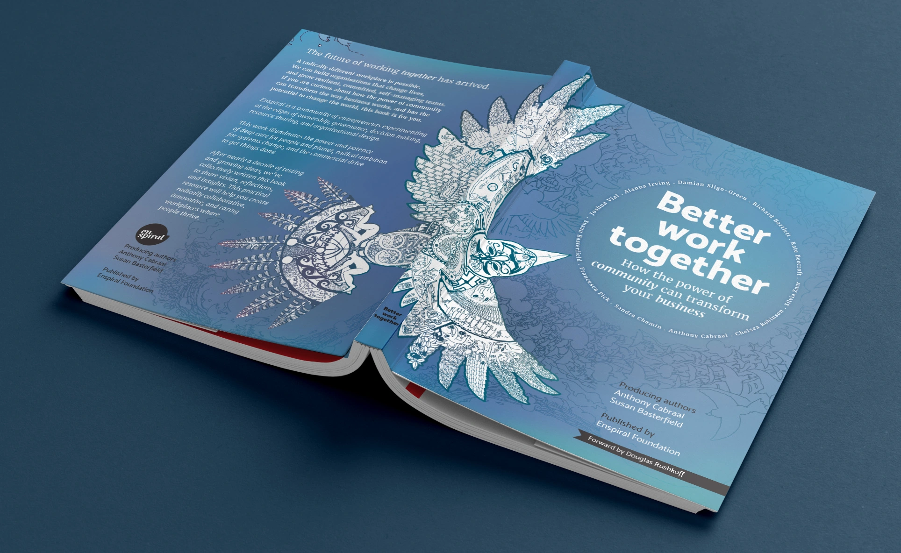
Um livro que defende a colaboração descentralizada não podia ser feito por um comitê trancado numa sala. Eu precisava fazer a própria produção provar a tese.
A própria produção foi a prova. De São Paulo, sustentei a estrutura que conectava escritores, artistas, editoras e gráficas em cinco continentes. O sol nunca se punha sobre este livro.
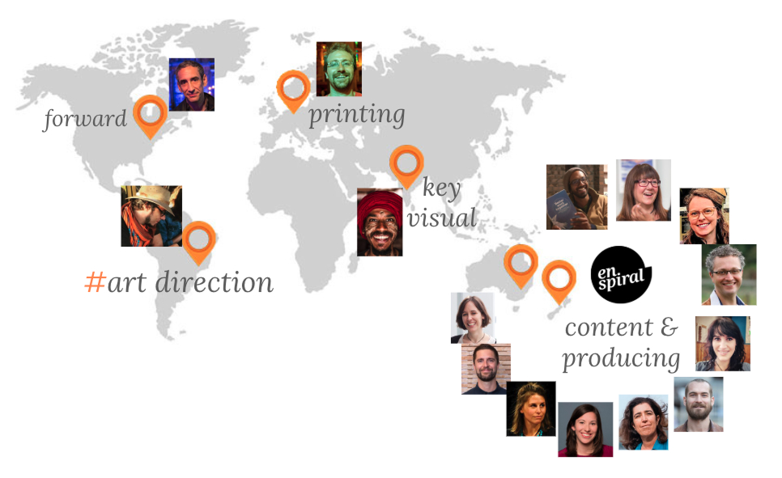
Susan Basterfield, Ants Cabraal (editores), Alanna Irving, Sandra Chemin, Damian Sligo-Green, Chelsea Robinson, Joshua Vial, Kate Beecroft, Francesca Pick, Richard Bartlett, Silvia Zuur (coautores), Mukund Yier (imagem principal), Joriam Philipe (produção gráfica), Renato Waru (design principal)
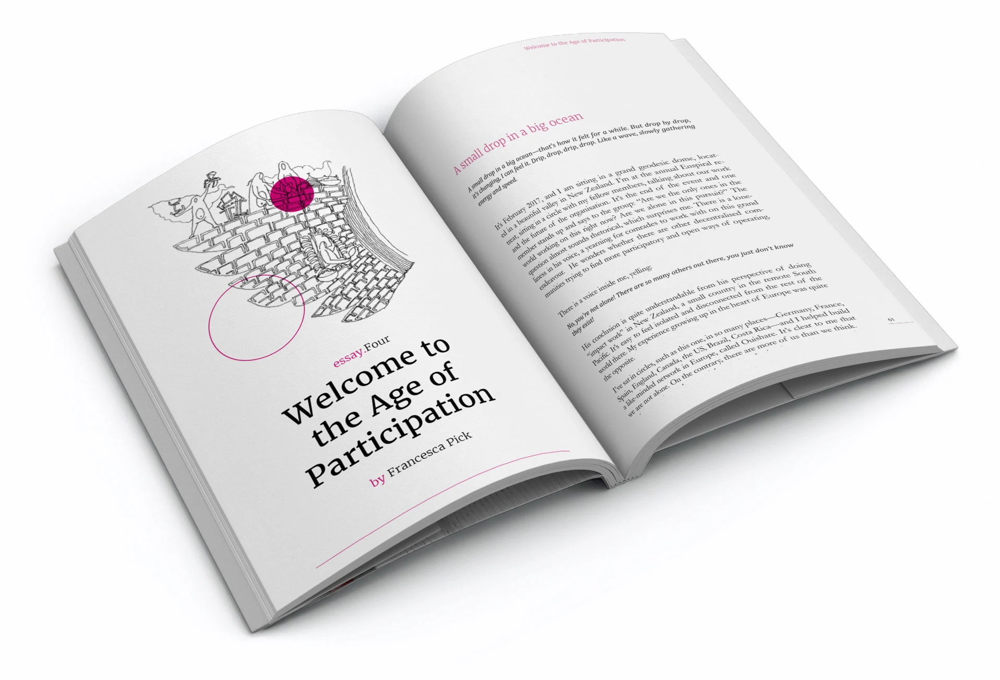
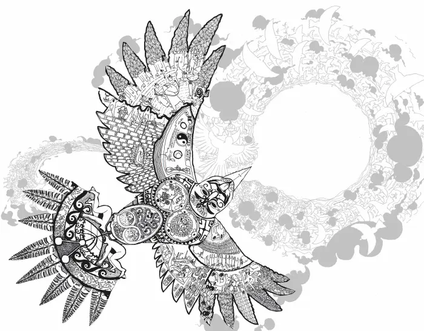
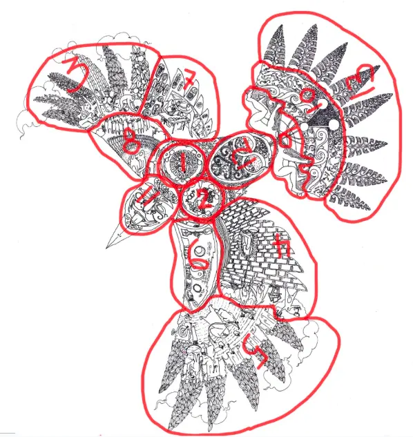
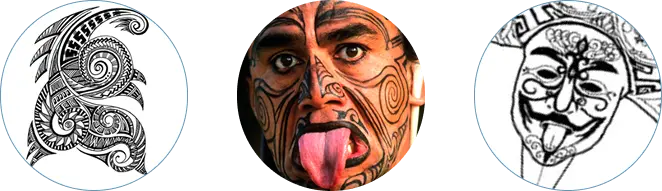
Enraizado nas tradições visuais māori, em que a identidade é carregada por padrões intricados e entrelaçados, o pássaro da capa foi desenhado inteiramente à mão pelo artista Mukund Yier, na Índia. Transformei cada fragmento na ilustração de abertura de um ensaio: o todo contém as partes, e as partes constroem o todo.
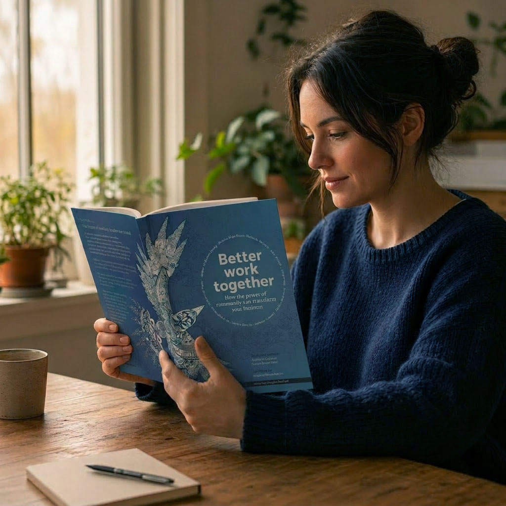
Estendi a ilustração, sem interrupção, pela capa, pela lombada e pela quarta capa. O título circular à direita espelha a abertura escura da quarta capa, de modo que o livro se lê como um único objeto contínuo, na estante ou aberto.
Para manter o orçamento honesto, imprimi os onze ensaios em apenas duas cores, preto e magenta, e deixei uma dúzia de capítulos especiais explodir em cores. A contenção fez a cor valer.
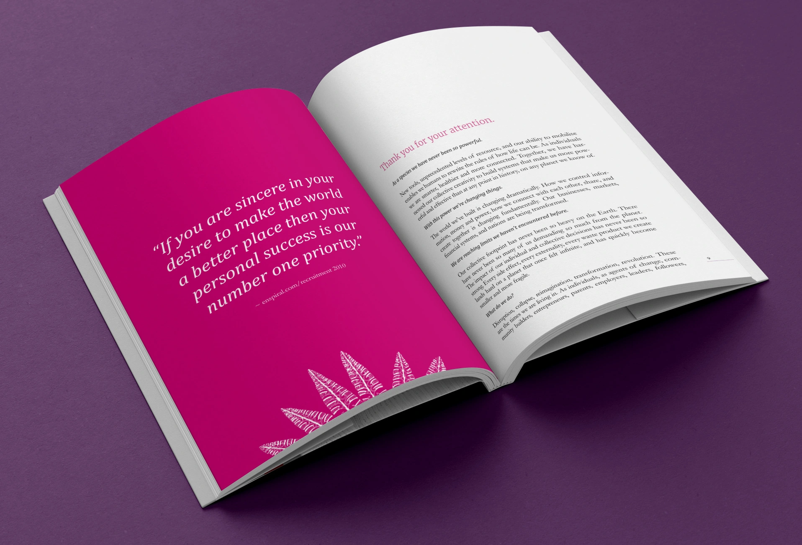
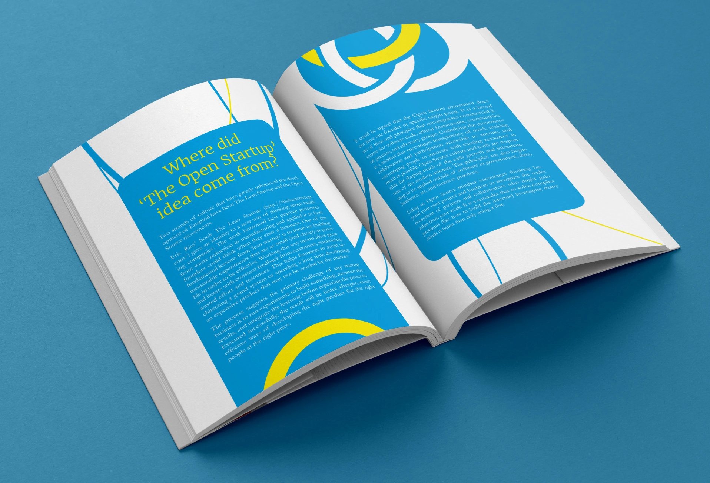
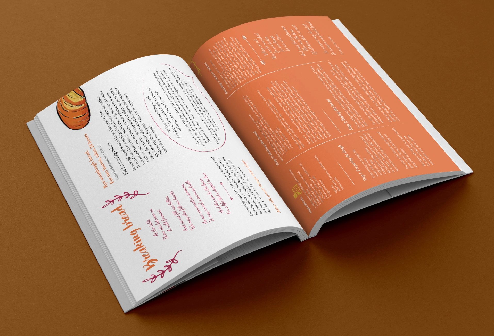
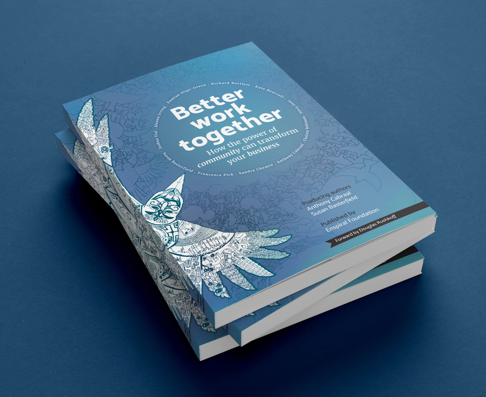
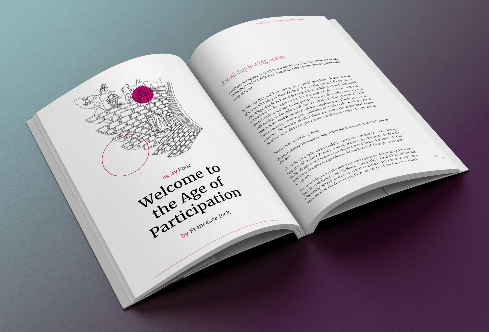
O diretor de criação Renato foi muito além do esperado para expressar o espírito coletivo e criativo deste trabalho e, junto com o artista Mukund, transformou texto em uma obra de arte.Ants Cabraal Editor, Better Work Together · Enspiral Foundation